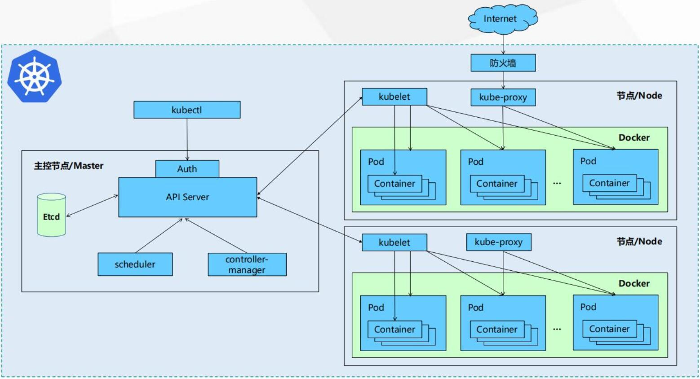

<!DOCTYPE html>
<html>
<head><meta name="generator" content="Hexo 3.9.0">

    <!--[if lt IE 9]>
        <style>body {display: none; background: none !important} </style>
        <meta http-equiv="Refresh" Content="0; url=//outdatedbrowser.com/" />
    <![endif]-->

<meta charset="utf-8">
<meta http-equiv="X-UA-Compatible" content="IE=edge, chrome=1">
<meta name="viewport" content="width=device-width, initial-scale=1, maximum-scale=1, user-scalable=no">
<meta name="format-detection" content="telephone=no">
<meta name="author" content="dongs365">


<meta name="description" content="Kubernetes 是一个跨主机集群的 开源的容器调度平台，它可以自动化应用容器的部署、扩展和操作 , 提供以容器为中心的基础架构。">
<meta name="keywords" content="k8s">
<meta property="og:type" content="article">
<meta property="og:title" content="kubernetes">
<meta property="og:url" content="http://blog.mooom.top/2019/09/05/kubernetes/index.html">
<meta property="og:site_name" content="MOOOM">
<meta property="og:description" content="Kubernetes 是一个跨主机集群的 开源的容器调度平台，它可以自动化应用容器的部署、扩展和操作 , 提供以容器为中心的基础架构。">
<meta property="og:locale" content="default">
<meta property="og:image" content="http://blog.mooom.top/image/kubernetes.jpg">
<meta property="og:updated_time" content="2019-09-06T03:25:29.018Z">
<meta name="twitter:card" content="summary">
<meta name="twitter:title" content="kubernetes">
<meta name="twitter:description" content="Kubernetes 是一个跨主机集群的 开源的容器调度平台，它可以自动化应用容器的部署、扩展和操作 , 提供以容器为中心的基础架构。">
<meta name="twitter:image" content="http://blog.mooom.top/image/kubernetes.jpg">

<link rel="apple-touch-icon" href="/apple-touch-icon.png">


    <link rel="alternate" href="/atom.xml" title="MOOOM" type="application/atom+xml">


    <link rel="shortcut icon" href="/favicon.png">


    <link href="//cdn.bootcss.com/animate.css/3.5.1/animate.min.css" rel="stylesheet">


    <link href="//cdn.bootcss.com/fancybox/2.1.5/jquery.fancybox.min.css" rel="stylesheet">


    <script src="//cdn.bootcss.com/pace/1.0.2/pace.min.js"></script>
    <link href="//cdn.bootcss.com/pace/1.0.2/themes/blue/pace-theme-minimal.css" rel="stylesheet">


<link rel="stylesheet" href="/css/style.css">


<link href="//cdn.bootcss.com/font-awesome/4.6.3/css/font-awesome.min.css" rel="stylesheet">


<title>kubernetes | MOOOM</title>

<script src="//cdn.bootcss.com/jquery/2.2.4/jquery.min.js"></script>
<script src="//cdn.bootcss.com/clipboard.js/1.5.10/clipboard.min.js"></script>

<script>
    var yiliaConfig = {
        fancybox: true,
        animate: true,
        isHome: false,
        isPost: true,
        isArchive: false,
        isTag: false,
        isCategory: false,
        fancybox_js: "//cdn.bootcss.com/fancybox/2.1.5/jquery.fancybox.min.js",
        scrollreveal: "//cdn.bootcss.com/scrollReveal.js/3.1.4/scrollreveal.min.js",
        search: true
    }
</script>


    <script> yiliaConfig.jquery_ui = [false]; </script>


    <script> yiliaConfig.rootUrl = "\/";</script>


    <script>
        var _hmt = _hmt || [];
        (function() {
            var hm = document.createElement("script");
            hm.src = "//hm.baidu.com/hm.js?61c244d51a80bcf25a7d76377e2a8fa9";
            var s = document.getElementsByTagName("script")[0]; 
            s.parentNode.insertBefore(hm, s);
        })();
    </script>


</head></html>
<body>
  <div id="container">
    <div class="left-col">
    <div class="overlay"></div>
<div class="intrude-less">
    <header id="header" class="inner">
        <a href="/" class="profilepic">
            
        </a>
        <hgroup>
          <h1 class="header-author"><a href="/">dongs365</a></h1>
        </hgroup>

        
        <p class="header-subtitle">生活中的那一秒</p>
        

        
            <form id="search-form">
            <input type="text" id="local-search-input" name="q" placeholder="search..." class="search form-control" autocomplete="off" autocorrect="off" searchonload="false" />
            <i class="fa fa-times" onclick="resetSearch()"></i>
            </form>
            <div id="local-search-result"></div>
            <p class='no-result'>No results found <i class='fa fa-spinner fa-pulse'></i></p>
        


        
            <div id="switch-btn" class="switch-btn">
                <div class="icon">
                    <div class="icon-ctn">
                        <div class="icon-wrap icon-house" data-idx="0">
                            <div class="birdhouse"></div>
                            <div class="birdhouse_holes"></div>
                        </div>
                        <div class="icon-wrap icon-ribbon hide" data-idx="1">
                            <div class="ribbon"></div>
                        </div>
                        
                        <div class="icon-wrap icon-link hide" data-idx="2">
                            <div class="loopback_l"></div>
                            <div class="loopback_r"></div>
                        </div>
                        
                        
                        <div class="icon-wrap icon-me hide" data-idx="3">
                            <div class="user"></div>
                            <div class="shoulder"></div>
                        </div>
                        
                    </div>

                </div>
                <div class="tips-box hide">
                    <div class="tips-arrow"></div>
                    <ul class="tips-inner">
                        <li>菜单</li>
                        <li>标签</li>
                        
                        <li>友链</li>
                        
                        
                        <li>关于</li>
                        
                    </ul>
                </div>
            </div>
        

        <div id="switch-area" class="switch-area">
            <div class="switch-wrap">
                <section class="switch-part switch-part1">
                    <nav class="header-menu">
                        <ul>
                        
                            <li><a href="/">主 页</a></li>
                        
                            <li><a href="/archives/">文 章</a></li>
                        
                            <li><a href="/tags/">标 签</a></li>
                        
                            <li><a href="/about/">关 于</a></li>
                        
                        </ul>
                    </nav>
                    <nav class="header-nav">
                        <ul class="social">
                            
                                <a class="fa Email" href="mailto:dongs365" title="Email"></a>
                            
                                <a class="fa RSS" href="/atom.xml" title="RSS"></a>
                            
                        </ul>
                    </nav>
                </section>

                
                <section class="switch-part switch-part2">
                    <div class="widget tagcloud" id="js-tagcloud">
                        <ul class="tag-list"><li class="tag-list-item"><a class="tag-list-link" href="/tags/docker/">docker</a></li><li class="tag-list-item"><a class="tag-list-link" href="/tags/excel/">excel</a></li><li class="tag-list-item"><a class="tag-list-link" href="/tags/k8s/">k8s</a></li><li class="tag-list-item"><a class="tag-list-link" href="/tags/mongodb/">mongodb</a></li><li class="tag-list-item"><a class="tag-list-link" href="/tags/mysql/">mysql</a></li><li class="tag-list-item"><a class="tag-list-link" href="/tags/offices/">offices</a></li><li class="tag-list-item"><a class="tag-list-link" href="/tags/shell/">shell</a></li><li class="tag-list-item"><a class="tag-list-link" href="/tags/命令/">命令</a></li><li class="tag-list-item"><a class="tag-list-link" href="/tags/安全/">安全</a></li><li class="tag-list-item"><a class="tag-list-link" href="/tags/工具/">工具</a></li><li class="tag-list-item"><a class="tag-list-link" href="/tags/插件/">插件</a></li><li class="tag-list-item"><a class="tag-list-link" href="/tags/文言文/">文言文</a></li><li class="tag-list-item"><a class="tag-list-link" href="/tags/架构/">架构</a></li><li class="tag-list-item"><a class="tag-list-link" href="/tags/系统/">系统</a></li><li class="tag-list-item"><a class="tag-list-link" href="/tags/网络/">网络</a></li></ul>
                    </div>
                </section>
                

                
                <section class="switch-part switch-part3">
                    <div id="js-friends">
                    
                      <a class="main-nav-link switch-friends-link" href="https://hexo.io">Hexo</a>
                    
                      <a class="main-nav-link switch-friends-link" href="https://pages.github.com/">GitHub</a>
                    
                    </div>
                </section>
                

                
                
                <section class="switch-part switch-part4">
                
                    <div id="js-aboutme">吃 饱 没 事 干</div>
                </section>
                
            </div>

        </div>
    </header>
</div>

    </div>
    <div class="mid-col">
      <nav id="mobile-nav">
      <div class="overlay">
          <div class="slider-trigger"></div>
          <h1 class="header-author js-mobile-header hide"><a href="/" title="回到主页">dongs365</a></h1>
      </div>
    <div class="intrude-less">
        <header id="header" class="inner">
            <a href="/" class="profilepic">
                
            </a>
            <hgroup>
              <h1 class="header-author"><a href="/" title="回到主页">dongs365</a></h1>
            </hgroup>
            
            <p class="header-subtitle">生活中的那一秒</p>
            
            <nav class="header-menu">
                <ul>
                
                    <li><a href="/">主 页</a></li>
                
                    <li><a href="/archives/">文 章</a></li>
                
                    <li><a href="/tags/">标 签</a></li>
                
                    <li><a href="/about/">关 于</a></li>
                
                <div class="clearfix"></div>
                </ul>
            </nav>
            <nav class="header-nav">
                        <ul class="social">
                            
                                <a class="fa Email" target="_blank" href="mailto:dongs365" title="Email"></a>
                            
                                <a class="fa RSS" target="_blank" href="/atom.xml" title="RSS"></a>
                            
                        </ul>
            </nav>
        </header>                
    </div>
    <link class="menu-list" tags="标签" friends="友链" about="关于"/>
</nav>
      <div class="body-wrap"><article id="post-kubernetes" class="article article-type-post" itemscope itemprop="blogPost">
  
    <div class="article-meta">
      <a href="/2019/09/05/kubernetes/" class="article-date">
      <time datetime="2019-09-05T10:09:30.000Z" itemprop="datePublished">2019-09-05</time>
</a>


    </div>
  
  <div class="article-inner">
    
      <input type="hidden" class="isFancy" />
    
    
      <header class="article-header">
        
  
    <h1 class="article-title" itemprop="name">
      kubernetes
    </h1>
  

      </header>
      
      <div class="article-info article-info-post">
        
    <div class="article-category tagcloud">
    <a class="article-category-link" href="/categories/集群/">集群</a>
    </div>


        
    <div class="article-tag tagcloud">
        <ul class="article-tag-list"><li class="article-tag-list-item"><a class="article-tag-list-link" href="/tags/k8s/">k8s</a></li></ul>
    </div>

        <div class="clearfix"></div>
      </div>
      
    
    <div class="article-entry" itemprop="articleBody">
      
          
        <p>Kubernetes 是一个跨主机集群的 开源的容器调度平台，它可以自动化应用容器的部署、扩展和操作 , 提供以容器为中心的基础架构。</p>
<a id="more"></a>
<h3 id="特点"><a href="#特点" class="headerlink" title="特点"></a>特点</h3><p>便携性: 无论公有云、私有云、混合云还是多云架构都全面支持<br>可扩展: 它是模块化、可插拔、可挂载、可组合的，支持各种形式的扩展<br>自修复: 它可以自保持应用状态、可自重启、自复制、自缩放的，通过声明式语法提供了强大的自修复能力</p>
<h3 id="核心组件组成"><a href="#核心组件组成" class="headerlink" title="核心组件组成"></a>核心组件组成</h3><p>etcd保存了整个集群的状态；<br>apiserver提供了资源操作的唯一入口，并提供认证、授权、访问控制、API注册和发现等机制；<br>controller manager负责维护集群的状态，比如故障检测、自动扩展、滚动更新等；<br>scheduler负责资源的调度，按照预定的调度策略将Pod调度到相应的机器上；<br>kubelet负责维护容器的生命周期，同时也负责Volume（CVI）和网络（CNI）的管理；<br>Container runtime负责镜像管理以及Pod和容器的真正运行（CRI）；<br>kube-proxy负责为Service提供cluster内部的服务发现和负载均衡；</p>
<h3 id="架构图示"><a href="#架构图示" class="headerlink" title="架构图示"></a>架构图示</h3><p></p>
<h2 id="部署指南"><a href="#部署指南" class="headerlink" title="部署指南"></a>部署指南</h2><h3 id="基础系统配置"><a href="#基础系统配置" class="headerlink" title="基础系统配置"></a>基础系统配置</h3><h4 id="永久关闭swapoff"><a href="#永久关闭swapoff" class="headerlink" title="永久关闭swapoff"></a>永久关闭swapoff</h4><figure class="highlight plain"><table><tr><td class="gutter"><pre><span class="line">1</span><br><span class="line">2</span><br></pre></td><td class="code"><pre><span class="line">vim /etc/fstab</span><br><span class="line">注释 swap 的那一行</span><br></pre></td></tr></table></figure>

<h4 id="永久开启ip转发"><a href="#永久开启ip转发" class="headerlink" title="永久开启ip转发"></a>永久开启ip转发</h4><figure class="highlight plain"><table><tr><td class="gutter"><pre><span class="line">1</span><br><span class="line">2</span><br></pre></td><td class="code"><pre><span class="line">sed -i &quot;s/#net.ipv4.ip_forward/net.ipv4.ip_forward/g&quot; /etc/sysctl.conf</span><br><span class="line">sysctl -p</span><br></pre></td></tr></table></figure>

<h3 id="安装系统软件"><a href="#安装系统软件" class="headerlink" title="安装系统软件"></a>安装系统软件</h3><h4 id="docker-安装"><a href="#docker-安装" class="headerlink" title="docker 安装"></a>docker 安装</h4><figure class="highlight plain"><table><tr><td class="gutter"><pre><span class="line">1</span><br></pre></td><td class="code"><pre><span class="line">curl -fsSL https://get.docker.com | bash -s docker --mirror Aliyun</span><br></pre></td></tr></table></figure>

<h4 id="kubeadm-安装"><a href="#kubeadm-安装" class="headerlink" title="kubeadm 安装"></a>kubeadm 安装</h4><figure class="highlight plain"><table><tr><td class="gutter"><pre><span class="line">1</span><br><span class="line">2</span><br><span class="line">3</span><br><span class="line">4</span><br><span class="line">5</span><br><span class="line">6</span><br><span class="line">7</span><br></pre></td><td class="code"><pre><span class="line">apt-get update &amp;&amp; apt-get install -y apt-transport-https</span><br><span class="line">curl https://mirrors.aliyun.com/kubernetes/apt/doc/apt-key.gpg | apt-key add -</span><br><span class="line">cat &lt;&lt;EOF &gt;/etc/apt/sources.list.d/kubernetes.list</span><br><span class="line">deb https://mirrors.aliyun.com/kubernetes/apt/ kubernetes-xenial main</span><br><span class="line">EOF</span><br><span class="line">apt-get update</span><br><span class="line">apt-get install -y kubelet kubeadm kubectl</span><br></pre></td></tr></table></figure>

<h3 id="PULL相关镜像"><a href="#PULL相关镜像" class="headerlink" title="PULL相关镜像"></a>PULL相关镜像</h3><h4 id="k8s镜像下载"><a href="#k8s镜像下载" class="headerlink" title="k8s镜像下载"></a>k8s镜像下载</h4><figure class="highlight plain"><table><tr><td class="gutter"><pre><span class="line">1</span><br><span class="line">2</span><br><span class="line">3</span><br><span class="line">4</span><br><span class="line">5</span><br><span class="line">6</span><br><span class="line">7</span><br><span class="line">8</span><br><span class="line">9</span><br><span class="line">10</span><br><span class="line">11</span><br><span class="line">12</span><br><span class="line">13</span><br><span class="line">14</span><br><span class="line">15</span><br><span class="line">16</span><br><span class="line">17</span><br></pre></td><td class="code"><pre><span class="line">#!/bin/bash</span><br><span class="line">#获取images列表</span><br><span class="line">#基础镜像</span><br><span class="line">im1=`kubeadm config images list`</span><br><span class="line">#ui镜像</span><br><span class="line">im2=`curl -s https://raw.githubusercontent.com/kubernetes/dashboard/v1.10.1/src/deploy/recommended/kubernetes-dashboard.yaml|grep image |awk &apos;&#123;print $2&#125;&apos;`</span><br><span class="line">#网络镜像</span><br><span class="line">im3=`curl -s https://raw.githubusercontent.com/coreos/flannel/master/Documentation/kube-flannel.yml |grep image|grep amd64|uniq|awk &apos;&#123;print $2&#125;&apos;`</span><br><span class="line">ki=`echo $im1 $im2 $im3`</span><br><span class="line">#下载images镜像</span><br><span class="line">for i in $&#123;ki[*]&#125;;do docker pull $&#123;i&#125;; done</span><br><span class="line">#新的images镜像名称</span><br><span class="line">kia=(`for i in $&#123;ki[*]&#125;;do echo $i | sed &apos;s/k8s.gcr.io/registry.cn-shenzhen.aliyuncs.com\/grc/&apos;; done`)</span><br><span class="line">#修改images标签</span><br><span class="line">for ((i=0;i&lt;$&#123;#ki[@]&#125;;i++));do docker tag  $&#123;ki[i]&#125; $&#123;kia[i]&#125;;done</span><br><span class="line">#推送images</span><br><span class="line">for i in $&#123;kia[*]&#125;;do echo $i | docker push $&#123;i&#125; ; done</span><br></pre></td></tr></table></figure>

<h4 id="本地PULL下载"><a href="#本地PULL下载" class="headerlink" title="本地PULL下载"></a>本地PULL下载</h4><figure class="highlight plain"><table><tr><td class="gutter"><pre><span class="line">1</span><br><span class="line">2</span><br><span class="line">3</span><br><span class="line">4</span><br><span class="line">5</span><br><span class="line">6</span><br><span class="line">7</span><br><span class="line">8</span><br><span class="line">9</span><br><span class="line">10</span><br><span class="line">11</span><br><span class="line">12</span><br><span class="line">13</span><br><span class="line">14</span><br><span class="line">15</span><br></pre></td><td class="code"><pre><span class="line">#!/bin/bash</span><br><span class="line">#获取images列表</span><br><span class="line">#基础镜像</span><br><span class="line">im1=`kubeadm config images list`</span><br><span class="line">#ui镜像</span><br><span class="line">im2=`curl -s https://raw.githubusercontent.com/kubernetes/dashboard/v1.10.1/src/deploy/recommended/kubernetes-dashboard.yaml|grep image |awk &apos;&#123;print $2&#125;&apos;`</span><br><span class="line">#网络镜像</span><br><span class="line">im3=`curl -s https://raw.githubusercontent.com/coreos/flannel/master/Documentation/kube-flannel.yml |grep image|grep amd64|uniq|awk &apos;&#123;print $2&#125;&apos;`</span><br><span class="line">ki=`echo $im1 $im2 $im3`</span><br><span class="line">#新的images镜像名称</span><br><span class="line">kia=(`for i in $&#123;ki[*]&#125;;do echo $i | sed &apos;s/k8s.gcr.io/registry.cn-shenzhen.aliyuncs.com\/grc/&apos;; done`)</span><br><span class="line">#下载images镜像</span><br><span class="line">for i in $&#123;kia[*]&#125;;do docker pull $&#123;i&#125;; done</span><br><span class="line">#修改images标签</span><br><span class="line">for ((i=0;i&lt;$&#123;#ki[@]&#125;;i++));do docker tag  $&#123;kia[i]&#125; $&#123;ki[i]&#125;;done</span><br></pre></td></tr></table></figure>

<h4 id="查看所需的images"><a href="#查看所需的images" class="headerlink" title="查看所需的images"></a>查看所需的images</h4><figure class="highlight plain"><table><tr><td class="gutter"><pre><span class="line">1</span><br></pre></td><td class="code"><pre><span class="line">kubeadm config images list</span><br></pre></td></tr></table></figure>

<figure class="highlight plain"><table><tr><td class="gutter"><pre><span class="line">1</span><br><span class="line">2</span><br><span class="line">3</span><br><span class="line">4</span><br><span class="line">5</span><br><span class="line">6</span><br><span class="line">7</span><br></pre></td><td class="code"><pre><span class="line">k8s.gcr.io/kube-apiserver:v1.13.2</span><br><span class="line">k8s.gcr.io/kube-controller-manager:v1.13.2</span><br><span class="line">k8s.gcr.io/kube-scheduler:v1.13.2</span><br><span class="line">k8s.gcr.io/kube-proxy:v1.13.2</span><br><span class="line">k8s.gcr.io/pause:3.1</span><br><span class="line">k8s.gcr.io/etcd:3.2.24</span><br><span class="line">k8s.gcr.io/coredns:1.2.6</span><br></pre></td></tr></table></figure>

<figure class="highlight plain"><table><tr><td class="gutter"><pre><span class="line">1</span><br><span class="line">2</span><br></pre></td><td class="code"><pre><span class="line">k8s.gcr.io/kubernetes-dashboard-amd64:v1.10.1</span><br><span class="line">quay.io/coreos/flannel：v0.11.0-amd64</span><br></pre></td></tr></table></figure>

<h4 id="查看-dashboard-版本"><a href="#查看-dashboard-版本" class="headerlink" title="查看 dashboard 版本"></a>查看 dashboard 版本</h4><figure class="highlight plain"><table><tr><td class="gutter"><pre><span class="line">1</span><br></pre></td><td class="code"><pre><span class="line">https://raw.githubusercontent.com/kubernetes/dashboard/master/aio/deploy/recommended/kubernetes-dashboard.yaml</span><br></pre></td></tr></table></figure>

<h4 id="查看-flannel-版本"><a href="#查看-flannel-版本" class="headerlink" title="查看 flannel 版本"></a>查看 flannel 版本</h4><figure class="highlight plain"><table><tr><td class="gutter"><pre><span class="line">1</span><br></pre></td><td class="code"><pre><span class="line">https://raw.githubusercontent.com/coreos/flannel/master/Documentation/kube-flannel.yml</span><br></pre></td></tr></table></figure>

<h3 id="k8s部署"><a href="#k8s部署" class="headerlink" title="k8s部署"></a>k8s部署</h3><h4 id="初始化"><a href="#初始化" class="headerlink" title="初始化"></a>初始化</h4><p>（指定k8s版本，内网ip段，apiserver的ip）</p>
<figure class="highlight plain"><table><tr><td class="gutter"><pre><span class="line">1</span><br></pre></td><td class="code"><pre><span class="line">kubeadm init --kubernetes-version=1.15.0 --pod-network-cidr=10.244.0.0/16 --apiserver-advertise-address=192.168.0.227</span><br></pre></td></tr></table></figure>

<figure class="highlight plain"><table><tr><td class="gutter"><pre><span class="line">1</span><br></pre></td><td class="code"><pre><span class="line">kubeadm init --pod-network-cidr=10.244.0.0/16</span><br></pre></td></tr></table></figure>

<h4 id="重置kubeadm"><a href="#重置kubeadm" class="headerlink" title="重置kubeadm"></a>重置kubeadm</h4><figure class="highlight plain"><table><tr><td class="gutter"><pre><span class="line">1</span><br></pre></td><td class="code"><pre><span class="line">kubeadm reset</span><br></pre></td></tr></table></figure>

<figure class="highlight plain"><table><tr><td class="gutter"><pre><span class="line">1</span><br></pre></td><td class="code"><pre><span class="line">rm -rf /var/lib/cni/ $HOME/.kube/config</span><br></pre></td></tr></table></figure>

<h3 id="k8s插件安装"><a href="#k8s插件安装" class="headerlink" title="k8s插件安装"></a>k8s插件安装</h3><h4 id="安装网络"><a href="#安装网络" class="headerlink" title="安装网络"></a>安装网络</h4><p>(注意配置文件中的network的网段)</p>
<figure class="highlight plain"><table><tr><td class="gutter"><pre><span class="line">1</span><br><span class="line">2</span><br></pre></td><td class="code"><pre><span class="line">sudo kubectl apply -f https://raw.githubusercontent.com/coreos/flannel/master/Documentation/kube-flannel.yml</span><br><span class="line">sudo kubectl apply -f https://raw.githubusercontent.com/coreos/flannel/master/Documentation/k8s-manifests/kube-flannel-rbac.yml</span><br></pre></td></tr></table></figure>

<h4 id="dashboard安装"><a href="#dashboard安装" class="headerlink" title="dashboard安装"></a>dashboard安装</h4><figure class="highlight plain"><table><tr><td class="gutter"><pre><span class="line">1</span><br><span class="line">2</span><br></pre></td><td class="code"><pre><span class="line">kubectl apply -f https://raw.githubusercontent.com/kubernetes/dashboard/v2.0.0-beta1/aio/deploy/recommended.yaml</span><br><span class="line">kubectl proxy</span><br></pre></td></tr></table></figure>

<p><a href="https://kubernetes.io/docs/tasks/access-application-cluster/web-ui-dashboard/" target="_blank" rel="noopener">https://kubernetes.io/docs/tasks/access-application-cluster/web-ui-dashboard/</a><br><a href="https://github.com/kubernetes/dashboard/wiki/Creating-sample-user" target="_blank" rel="noopener">https://github.com/kubernetes/dashboard/wiki/Creating-sample-user</a></p>
<h5 id="dashboard正式"><a href="#dashboard正式" class="headerlink" title="dashboard正式"></a>dashboard正式</h5><figure class="highlight plain"><table><tr><td class="gutter"><pre><span class="line">1</span><br></pre></td><td class="code"><pre><span class="line">kubectl apply -f https://raw.githubusercontent.com/kubernetes/dashboard/v1.10.1/src/deploy/recommended/kubernetes-dashboard.yaml</span><br></pre></td></tr></table></figure>

<h6 id="创建用户文件"><a href="#创建用户文件" class="headerlink" title="创建用户文件"></a>创建用户文件</h6><p>dashboard-adminuser.yaml</p>
<figure class="highlight plain"><table><tr><td class="gutter"><pre><span class="line">1</span><br><span class="line">2</span><br><span class="line">3</span><br><span class="line">4</span><br><span class="line">5</span><br><span class="line">6</span><br><span class="line">7</span><br><span class="line">8</span><br><span class="line">9</span><br><span class="line">10</span><br><span class="line">11</span><br><span class="line">12</span><br><span class="line">13</span><br><span class="line">14</span><br><span class="line">15</span><br><span class="line">16</span><br><span class="line">17</span><br></pre></td><td class="code"><pre><span class="line">apiVersion: v1</span><br><span class="line">kind: ServiceAccount</span><br><span class="line">metadata:</span><br><span class="line">  name: admin-user</span><br><span class="line">  namespace: kube-system</span><br><span class="line">apiVersion: rbac.authorization.k8s.io/v1</span><br><span class="line">kind: ClusterRoleBinding</span><br><span class="line">metadata:</span><br><span class="line">  name: admin-user</span><br><span class="line">roleRef:</span><br><span class="line">  apiGroup: rbac.authorization.k8s.io</span><br><span class="line">  kind: ClusterRole</span><br><span class="line">  name: cluster-admin</span><br><span class="line">subjects:</span><br><span class="line">- kind: ServiceAccount</span><br><span class="line">  name: admin-user</span><br><span class="line">  namespace: kube-system</span><br></pre></td></tr></table></figure>

<figure class="highlight plain"><table><tr><td class="gutter"><pre><span class="line">1</span><br></pre></td><td class="code"><pre><span class="line">kubectl apply -f dashboard-adminuser.yaml</span><br></pre></td></tr></table></figure>

<h5 id="启动"><a href="#启动" class="headerlink" title="启动"></a>启动</h5><figure class="highlight plain"><table><tr><td class="gutter"><pre><span class="line">1</span><br></pre></td><td class="code"><pre><span class="line">kubectl proxy</span><br></pre></td></tr></table></figure>

<h5 id="查看token"><a href="#查看token" class="headerlink" title="查看token"></a>查看token</h5><figure class="highlight plain"><table><tr><td class="gutter"><pre><span class="line">1</span><br></pre></td><td class="code"><pre><span class="line">kubectl -n kube-system describe secret $(kubectl -n kube-system get secret | grep admin-user | awk &apos;&#123;print $1&#125;&apos;)</span><br></pre></td></tr></table></figure>

<h5 id="访问地址"><a href="#访问地址" class="headerlink" title="访问地址"></a>访问地址</h5><p>使用xshell把8001映射到8001</p>
<figure class="highlight plain"><table><tr><td class="gutter"><pre><span class="line">1</span><br></pre></td><td class="code"><pre><span class="line">http://localhost:8001/api/v1/namespaces/kubernetes-dashboard/services/https:kubernetes-dashboard:/proxy/</span><br></pre></td></tr></table></figure>
      
    </div>
    
  </div>
  
    
    <div class="copyright">
        <p><span>本文标题:</span><a href="/2019/09/05/kubernetes/">kubernetes</a></p>
        <p><span>文章作者:</span><a href="/" title="回到主页">dongs365</a></p>
        <p><span>发布时间:</span>2019-09-05, 18:09:30</p>
        <p><span>最后更新:</span>2019-09-06, 11:25:29</p>
        <p>
            <span>原始链接:</span><a class="post-url" href="/2019/09/05/kubernetes/" title="kubernetes">http://blog.mooom.top/2019/09/05/kubernetes/</a>
            <span class="copy-path" data-clipboard-text="原文: http://blog.mooom.top/2019/09/05/kubernetes/　　作者: dongs365" title="点击复制文章链接"><i class="fa fa-clipboard"></i></span>
            <script> var clipboard = new Clipboard('.copy-path'); </script>
        </p>
        <p>
            <span>许可协议:</span><i class="fa fa-creative-commons"></i> <a rel="license" href="http://creativecommons.org/licenses/by-nc-sa/4.0/" title="CC BY-NC-SA 4.0 International" target = "_blank">"署名-非商用-相同方式共享 4.0"</a> 转载请保留原文链接及作者。
        </p>
    </div>


    <nav id="article-nav">
        
            <div id="article-nav-newer" class="article-nav-title">
                <a href="/2019/09/06/kubeadm/">
                    kubeadm
                </a>
            </div>
        
        
            <div id="article-nav-older" class="article-nav-title">
                <a href="/2018/09/10/laaspasssaas/">
                    Laas Pass Saas 区别
                </a>
            </div>
        
    </nav>

  
</article>

    <div id="toc" class="toc-article">
        <strong class="toc-title">文章目录</strong>
        
            <ol class="toc"><li class="toc-item toc-level-3"><a class="toc-link" href="#特点"><span class="toc-number">1.</span> <span class="toc-text">特点</span></a></li><li class="toc-item toc-level-3"><a class="toc-link" href="#核心组件组成"><span class="toc-number">2.</span> <span class="toc-text">核心组件组成</span></a></li><li class="toc-item toc-level-3"><a class="toc-link" href="#架构图示"><span class="toc-number">3.</span> <span class="toc-text">架构图示</span></a></li></ol></li><li class="toc-item toc-level-2"><a class="toc-link" href="#部署指南"><span class="toc-number"></span> <span class="toc-text">部署指南</span></a><ol class="toc-child"><li class="toc-item toc-level-3"><a class="toc-link" href="#基础系统配置"><span class="toc-number">1.</span> <span class="toc-text">基础系统配置</span></a><ol class="toc-child"><li class="toc-item toc-level-4"><a class="toc-link" href="#永久关闭swapoff"><span class="toc-number">1.1.</span> <span class="toc-text">永久关闭swapoff</span></a></li><li class="toc-item toc-level-4"><a class="toc-link" href="#永久开启ip转发"><span class="toc-number">1.2.</span> <span class="toc-text">永久开启ip转发</span></a></li></ol></li><li class="toc-item toc-level-3"><a class="toc-link" href="#安装系统软件"><span class="toc-number">2.</span> <span class="toc-text">安装系统软件</span></a><ol class="toc-child"><li class="toc-item toc-level-4"><a class="toc-link" href="#docker-安装"><span class="toc-number">2.1.</span> <span class="toc-text">docker 安装</span></a></li><li class="toc-item toc-level-4"><a class="toc-link" href="#kubeadm-安装"><span class="toc-number">2.2.</span> <span class="toc-text">kubeadm 安装</span></a></li></ol></li><li class="toc-item toc-level-3"><a class="toc-link" href="#PULL相关镜像"><span class="toc-number">3.</span> <span class="toc-text">PULL相关镜像</span></a><ol class="toc-child"><li class="toc-item toc-level-4"><a class="toc-link" href="#k8s镜像下载"><span class="toc-number">3.1.</span> <span class="toc-text">k8s镜像下载</span></a></li><li class="toc-item toc-level-4"><a class="toc-link" href="#本地PULL下载"><span class="toc-number">3.2.</span> <span class="toc-text">本地PULL下载</span></a></li><li class="toc-item toc-level-4"><a class="toc-link" href="#查看所需的images"><span class="toc-number">3.3.</span> <span class="toc-text">查看所需的images</span></a></li><li class="toc-item toc-level-4"><a class="toc-link" href="#查看-dashboard-版本"><span class="toc-number">3.4.</span> <span class="toc-text">查看 dashboard 版本</span></a></li><li class="toc-item toc-level-4"><a class="toc-link" href="#查看-flannel-版本"><span class="toc-number">3.5.</span> <span class="toc-text">查看 flannel 版本</span></a></li></ol></li><li class="toc-item toc-level-3"><a class="toc-link" href="#k8s部署"><span class="toc-number">4.</span> <span class="toc-text">k8s部署</span></a><ol class="toc-child"><li class="toc-item toc-level-4"><a class="toc-link" href="#初始化"><span class="toc-number">4.1.</span> <span class="toc-text">初始化</span></a></li><li class="toc-item toc-level-4"><a class="toc-link" href="#重置kubeadm"><span class="toc-number">4.2.</span> <span class="toc-text">重置kubeadm</span></a></li></ol></li><li class="toc-item toc-level-3"><a class="toc-link" href="#k8s插件安装"><span class="toc-number">5.</span> <span class="toc-text">k8s插件安装</span></a><ol class="toc-child"><li class="toc-item toc-level-4"><a class="toc-link" href="#安装网络"><span class="toc-number">5.1.</span> <span class="toc-text">安装网络</span></a></li><li class="toc-item toc-level-4"><a class="toc-link" href="#dashboard安装"><span class="toc-number">5.2.</span> <span class="toc-text">dashboard安装</span></a><ol class="toc-child"><li class="toc-item toc-level-5"><a class="toc-link" href="#dashboard正式"><span class="toc-number">5.2.1.</span> <span class="toc-text">dashboard正式</span></a><ol class="toc-child"><li class="toc-item toc-level-6"><a class="toc-link" href="#创建用户文件"><span class="toc-number">5.2.1.1.</span> <span class="toc-text">创建用户文件</span></a></li></ol></li><li class="toc-item toc-level-5"><a class="toc-link" href="#启动"><span class="toc-number">5.2.2.</span> <span class="toc-text">启动</span></a></li><li class="toc-item toc-level-5"><a class="toc-link" href="#查看token"><span class="toc-number">5.2.3.</span> <span class="toc-text">查看token</span></a></li><li class="toc-item toc-level-5"><a class="toc-link" href="#访问地址"><span class="toc-number">5.2.4.</span> <span class="toc-text">访问地址</span></a></li></ol></li></ol></li></ol>
        
    </div>
    <style>
        .left-col .switch-btn,
        .left-col .switch-area {
            display: none;
        }
        .toc-level-6 i,
        .toc-level-6 ol {
            display: none !important;
        }
    </style>

    <input type="button" id="tocButton" value="隐藏目录"  title="点击按钮隐藏或者显示文章目录">

    <script>
        yiliaConfig.toc = ["隐藏目录", "显示目录", !!"false"];
    </script>


    
<div class="share">
    
        <div class="bdsharebuttonbox">
            <a href="#" class="fa fa-twitter bds_twi" data-cmd="twi" title="分享到推特"></a>
            <a href="#" class="fa fa-weibo bds_tsina" data-cmd="tsina" title="分享到新浪微博"></a>
            <a href="#" class="fa fa-qq bds_sqq" data-cmd="sqq" title="分享给 QQ 好友"></a>
            <a href="#" class="fa fa-files-o bds_copy" data-cmd="copy" title="复制网址"></a>
            <a href="#" class="fa fa fa-envelope-o bds_mail" data-cmd="mail" title="通过邮件分享"></a>
            <a href="#" class="fa fa-weixin bds_weixin" data-cmd="weixin" title="生成文章二维码"></a>
            <a href="#" class="fa fa-share-alt bds_more" data-cmd="more"></i></a>
        </div>
        <script>
            window._bd_share_config={
                "common":{"bdSnsKey":{},"bdText":"kubernetes　| MOOOM　","bdMini":"2","bdMiniList":false,"bdPic":"","bdStyle":"0","bdSize":"24"},"share":{}};with(document)0[(getElementsByTagName('head')[0]||body).appendChild(createElement('script')).src='http://bdimg.share.baidu.com/static/api/js/share.js?v=89860593.js?cdnversion='+~(-new Date()/36e5)];
        </script>
    

    
</div>


    


    <div class="scroll" id="post-nav-button">
        
            <a href="/2019/09/06/kubeadm/" title="上一篇: kubeadm">
                <i class="fa fa-angle-left"></i>
            </a>
        

        <a title="文章列表"><i class="fa fa-bars"></i><i class="fa fa-times"></i></a>

        
            <a href="/2018/09/10/laaspasssaas/" title="下一篇: Laas Pass Saas 区别">
                <i class="fa fa-angle-right"></i>
            </a>
        
    </div>

    <ul class="post-list"><li class="post-list-item"><a class="post-list-link" href="/2019/11/05/haproxy/">HAProxy</a></li><li class="post-list-item"><a class="post-list-link" href="/2019/09/06/mariadb/">mariadb</a></li><li class="post-list-item"><a class="post-list-link" href="/2019/09/06/kubeadm/">kubeadm</a></li><li class="post-list-item"><a class="post-list-link" href="/2019/09/05/kubernetes/">kubernetes</a></li><li class="post-list-item"><a class="post-list-link" href="/2018/09/10/laaspasssaas/">Laas Pass Saas 区别</a></li><li class="post-list-item"><a class="post-list-link" href="/2018/09/10/dockerdemo/">docker镜像实例</a></li><li class="post-list-item"><a class="post-list-link" href="/2018/09/10/dockercomxxbb/">docker命令 版本信息</a></li><li class="post-list-item"><a class="post-list-link" href="/2018/09/10/dockercombdjx/">docker命令 本地镜像管理</a></li><li class="post-list-item"><a class="post-list-link" href="/2018/09/10/dockercomjxck/">docker命令 镜像仓库</a></li><li class="post-list-item"><a class="post-list-link" href="/2018/09/10/dockercomrootfs/">docker命令 rootfs命</a></li><li class="post-list-item"><a class="post-list-link" href="/2018/09/10/dockercomrqcz/">docker命令 容器操作</a></li><li class="post-list-item"><a class="post-list-link" href="/2018/09/10/dockercomsmzq/">docker命令 生命周期</a></li><li class="post-list-item"><a class="post-list-link" href="/2018/09/07/dockerfile/">dockerfile</a></li><li class="post-list-item"><a class="post-list-link" href="/2017/09/01/crontab/">crontab</a></li><li class="post-list-item"><a class="post-list-link" href="/2017/08/05/sshkey/">ssh 密钥登陆</a></li><li class="post-list-item"><a class="post-list-link" href="/2017/08/02/mysql-zctb/">mysql-server部署</a></li><li class="post-list-item"><a class="post-list-link" href="/2017/08/02/mysql-mmmcs/">mysql-mmm参数说明</a></li><li class="post-list-item"><a class="post-list-link" href="/2017/08/02/mysql-mmm/">mysql-mmm 部署指南</a></li><li class="post-list-item"><a class="post-list-link" href="/2017/08/02/mongodb/">mongodb 部署</a></li><li class="post-list-item"><a class="post-list-link" href="/2017/08/01/music/">hexo插入音频</a></li><li class="post-list-item"><a class="post-list-link" href="/2017/07/31/excelsjs/">Excel 随机字符数</a></li><li class="post-list-item"><a class="post-list-link" href="/2017/07/31/GoogleAuthenticator/">GoogleAuthenticator系统二次验证</a></li><li class="post-list-item"><a class="post-list-link" href="/2017/07/26/curl/">curl</a></li><li class="post-list-item"><a class="post-list-link" href="/2017/07/26/iptables/">iptables</a></li><li class="post-list-item"><a class="post-list-link" href="/2017/07/25/tcpdump/">tcpdump</a></li><li class="post-list-item"><a class="post-list-link" href="/2017/07/25/netstat/">netstat</a></li><li class="post-list-item"><a class="post-list-link" href="/2017/07/23/guorenzhiyuguoye/">《 寡人之于国也 》</a></li><li class="post-list-item"><a class="post-list-link" href="/2017/07/23/quanxuewyw/">《 劝 学 》</a></li><li class="post-list-item"><a class="post-list-link" href="/2017/07/23/shishuowyw/">《 师 说 》</a></li></ul>


    <script>
        
    </script>
</div>
      <footer id="footer">
    <div class="outer">
        <div id="footer-info">
            <div class="footer-left">
                <i class="fa fa-copyright"></i>
                2015-2019 dongs365
            </div>
            <div class="footer-right">
                <a href="#" target="_blank" title="MOOOM"> </a>  <a href="/" target="_blank" title="MOOOM  v">GO</a> by MOOOM<i class="fa fa-heart animated infinite pulse"></i>
            </div>
        </div>
        
            <div class="visit">
                
                    <span id="busuanzi_container_site_pv" style='display:none'>
                        <span id="site-visit" title="本站到访数"><i class="fa fa-user" aria-hidden="true"></i><span id="busuanzi_value_site_uv"></span>
                        </span>
                    </span>
                
                
                    <span>| </span>
                
                
                    <span id="busuanzi_container_page_pv" style='display:none'>
                        <span id="page-visit"  title="本页阅读量"><i class="fa fa-eye animated infinite pulse" aria-hidden="true"></i><span id="busuanzi_value_page_pv"></span>
                        </span>
                    </span>
                
            </div>
        
    </div>
    <script>
(function(){
    var bp = document.createElement('script');
    var curProtocol = window.location.protocol.split(':')[0];
    if (curProtocol === 'https') {
        bp.src = 'https://zz.bdstatic.com/linksubmit/push.js';
    }
    else {
        bp.src = 'http://push.zhanzhang.baidu.com/push.js';
    }
    var s = document.getElementsByTagName("script")[0];
    s.parentNode.insertBefore(bp, s);
})();
</script>

</footer>

    </div>
    
<script data-main="/js/main.js" src="//cdn.bootcss.com/require.js/2.2.0/require.min.js"></script>

    <script>
        $(document).ready(function() {
            var iPad = window.navigator.userAgent.indexOf('iPad');
            if (iPad > -1 || $(".left-col").css("display") === "none") {
                var bgColorList = ["#9db3f4", "#414141", "#e5a859", "#f5dfc6", "#c084a0", "#847e72", "#cd8390", "#996731"];
                var bgColor = Math.ceil(Math.random() * (bgColorList.length - 1));
                $("body").css({"background-color": bgColorList[bgColor], "background-size": "cover"});
            }
            else {
                var backgroundnum = 7;
                var backgroundimg = "url(/background/bg-x.jpg)".replace(/x/gi, Math.ceil(Math.random() * backgroundnum));
                $("body").css({"background": backgroundimg, "background-attachment": "fixed", "background-size": "cover"});
            }
        })
    </script>


<div class="scroll" id="scroll">
    <a href="#" title="返回顶部"><i class="fa fa-arrow-up"></i></a>
    <a href="#comments" onclick="load$hide();" title="查看评论"><i class="fa fa-comments-o"></i></a>
    <a href="#footer" title="转到底部"><i class="fa fa-arrow-down"></i></a>
</div>
<script>
    // Open in New Window
    
        var oOpenInNew = {
            
            
            
            
            
            
             archives: ".archive-article-title", 
             miniArchives: "a.post-list-link", 
            
             friends: "#js-friends a", 
             socail: ".social a" 
        }
        for (var x in oOpenInNew) {
            $(oOpenInNew[x]).attr("target", "_blank");
        }
    
</script>

    <script>
        var originTitle = document.title;
        var titleTime;
        document.addEventListener("visibilitychange", function() {
            if (document.hidden) {
                document.title = "O(∩_∩)O 快来点我~ " + originTitle;
                clearTimeout(titleTime);
            }
            else {
                document.title = "*@ο@* 终于点了~ " + originTitle;
                titleTime = setTimeout(function() {
                    document.title = originTitle;
                }, 2000);
            }
        })
    </script>

<script async src="https://busuanzi.ibruce.info/busuanzi/2.3/busuanzi.pure.mini.js">
</script>
<script type="text/javascript" opacity='1' src="http://cdn.bootcss.com/canvas-nest.js/1.0.1/canvas-nest.min.js"></script>

  </div>
</body>
</html>
